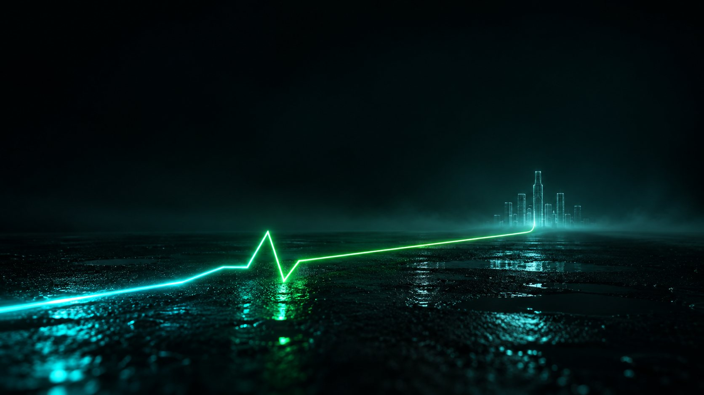

The Hybrid Pulse
On the LED wall a holographic city is being built. The mountain’s tunnel fills with light, the tractor rolls out silently on electric power, the city turns green, a herd of mammoths runs across the wall, and a brass band and singer perform in front of the tractor.
The runway hall
Guests pass through hidden doors in the LED wall to swivel seats on both sides of an asphalt road. The hall goes half dark and a holographic city builds itself on the wall and the hanging cubes.
The tunnel lights up
Rings of light fill the mountain’s tunnel. The sound of a diesel road comes closer and closer… and suddenly cuts.
GREAT WALL
Two headlights deep inside the tunnel. On the wall, a truck drawn in light and the name GREAT WALL take shape.
The electric exit
The tractor rolls out in silence, on its own electric power. The city turns green and the hall lights come fully up — the reveal is the proof.
The brass band
Saxophone, clarinet, trumpet and trombone, with a singer, step onto the road and play in front of the tractor.
Facing the stage
The tractor stops on its mark facing the stage — never onto it. A herd of light runs across the wall, the hall rises to its feet; then the speeches and the official photo.
Every space of The Hybrid Pulse, as the guests will see it.
How The Hybrid Pulse is built
The runway hall
An asphalt road runs down the centre, with low lights along both edges and runway-style swivel chairs on both sides. At one end the origami mountain with its round tunnel; at the other the stage, directly opposite the tunnel. One continuous U-shaped LED wall starts at the floor and stands about 4 m high, just above the tractor’s roof; it runs from both sides of the mountain round behind the stage with no cuts and no black frame. Four large LED cubes, about 3 m each, hang one behind the other in a single line above the road’s centre line. The stage is lit with cool light from below and above.
LED and live music
The LED content is a modern holographic city, not line drawings: translucent towers of cyan-white light on deep navy, constantly being built. Then a truck made of light and the name GREAT WALL take shape; as the tractor exits, the lines speed up, the city turns clean and green, and a herd of glowing mammoths runs. No logo. ‘Before’ is smoky and cold, ‘after’ clean and green. Live music: a brass band (saxophone, clarinet, trumpet and trombone) and a male singer, who perform on the road in front of the tractor once it has come out. Nobody stands on the mountain.
The reveal
The hall is half dark while the city builds on the LED. Suddenly the tunnel fills with light and the sound of the road comes closer. Two headlights come on deep in the tunnel and, at the same moment, a truck of light and the name GREAT WALL appear on the wall. The tractor, without a trailer, rolls out silently on electric power — one tractor only, no other lights behind it. At that moment the city turns green and the hall lights come fully up; by the time the tractor reaches the middle of the road the hall is fully lit and the mammoths are running. It stops on its mark in front of the stage — never onto it.